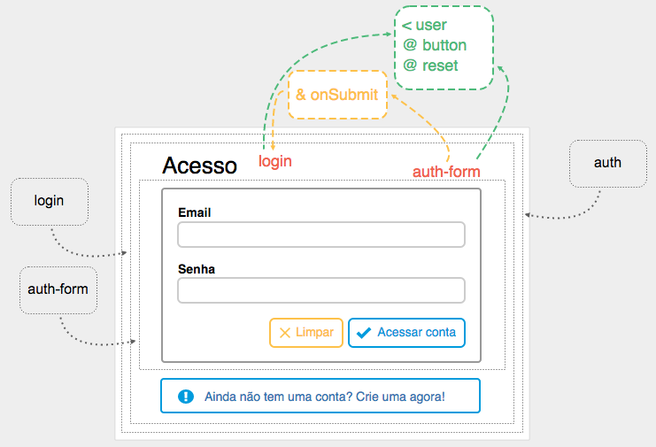

Arquitetura Orientada a Componentes

Web Components
Component-based software engineering (CBSE)
Component-based development (CBD)
Event-driven architectures (EDA)
Malcolm Douglas McIlroy

Primeira implementação
No Unix como Pipelines
O termo Web Components
Lembram do Ajax?!
AJAX = Asynchronous JavaScript And XML
Por que usar?
Reutilização
Separação de responsabilidades
Não é apenas JavaScript
Camadas
- Templates
- Decorators
- Custom elements
- Shadow DOM
- Imports
Templates
Decorators
Custom elements
Shadow DOM
Imports
Ciclo de vida
-
createdCallback -
attachedCallback -
detachedCallback -
attributeChangedCallback
AngularJS .Component
Compreendendo
- Configuração simples e adequada para uma estrutura baseada em componentes.
- Facilita a escrita de uma aplicação de forma semelhante à utilização de Web Components.
Vantagens
- Configuração simples
- Promove padrões e práticas recomendadas
- Otimizado para arquitetura baseada em componentes
Criando e configurando
Registrado usando o método .component() retornado de um angular.module() já definido.
O método .component() requer 2 argumentos:
-
O nome do componente como
string -
O objeto de configuração como
object
Exemplo (component)
let search = {
bindings: {
search: '<',
onUpdate: '&',
onClear: '&'
},
templateUrl: './search.html',
controller: 'SearchController'
}
angular
.module('components.search')
.component('search', search)
Exemplo (template)
Exemplo (controller)
function SearchController() {
let ctrl = this
ctrl.updateSearch = () => {
ctrl.onUpdate({ $event: { search: ctrl.search } })
}
ctrl.clear = () => {
ctrl.onClear({ $event: { search: '' } })
}
}
angular
.module('components.search')
.controller('SearchController', SearchController);
Exemplo de uso (template)
Exemplo de uso (controller)
function ContactsController($filter) {
let ctrl = this
ctrl.$onInit = () => {
ctrl.filteredContacts = $filter('contactsFilter')(ctrl.contacts, ctrl.filter)
}
ctrl.updateSearch = event => {
ctrl.search = event.search
}
}
angular
.module('components.contact')
.controller('ContactsController', ContactsController)
Opções de configuração
| bindings | Ligação com o controller |
| controller | Default: function() {} |
| controllerAs | Default: $ctrl |
| template | Injetável |
| templateUrl | Injetável |
| transclude | Default false |
| require |
Aplicação orientada a componentes
Componentes controlam apenas
seus próprios dados e view
Entrada e Saída (bindings)
{prop: '='} |
Ligação bidirecional |
{prop: '<'} |
Ligação unidirecional |
{prop: '@'} |
Sem ligação |
{prop: '&'} |
Evento de saída |
Estrutura da aplicação
Componentes comuns
- app
- app-nav
- app-sidebar
Representação amigável
Componentes
- auth
- search
- contacts
- contact
- ...
Componentes como rotas
Autenticação (auth)

auth.component.js
let auth = {
templateUrl: './auth.html'
}
angular
.module('components.auth')
.component('auth', auth)
.config(function ($stateProvider, $urlRouterProvider) {
$stateProvider
.state('auth', {
redirectTo: 'auth.login',
url: '/auth',
component: 'auth'
})
$urlRouterProvider.otherwise('/auth/login')
})
auth.html
Login

Eventos de login
login.component.js
let login = {
templateUrl: './login.html',
controller: 'LoginController'
}
angular
.module('components.auth')
.component('login', login)
.config(function ($stateProvider, $urlRouterProvider) {
$stateProvider
.state('auth.login', {
url: '/login',
component: 'login'
})
$urlRouterProvider.otherwise('/auth/login')
})
login.controller.js
function LoginController(AuthService, $state) {
let ctrl = this
ctrl.$onInit = () => {
ctrl.error = null
ctrl.user = {
email: '',
password: ''
}
}
ctrl.loginUser = event => {
return AuthService
.login(event.user)
.then(() => {
$state.go('app')
}, reason => {
ctrl.error = reason.message
})
}
}
angular
.module('components.auth')
.controller('LoginController', LoginController)
login.html
Acesso
Register
Eventos de register

register.component.js
let register = {
templateUrl: './register.html',
controller: 'RegisterController'
}
angular
.module('components.auth')
.component('register', register)
.config(function ($stateProvider) {
$stateProvider
.state('auth.register', {
url: '/register',
component: 'register'
})
})
register.controller.js
function RegisterController(AuthService, $state) {
let ctrl = this
ctrl.$onInit = () => {
ctrl.error = null
ctrl.user = {
email: '',
password: ''
}
}
ctrl.createUser = event => {
return AuthService
.register(event.user)
.then(() => {
$state.go('app')
}, reason => {
ctrl.error = reason.message
})
}
}
angular
.module('components.auth')
.controller('RegisterController', RegisterController)
register.html
Cadastro
Auth form

auth-form.component.js
let authForm = {
bindings: {
user: '<',
button: '@',
reset: '@',
message: '@',
onSubmit: '&'
},
templateUrl: './auth-form.html',
controller: 'AuthFormController'
}
angular
.module('components.auth')
.component('authForm', authForm)
auth-form.controller.js
function AuthFormController() {
let ctrl = this
ctrl.$onChanges = changes => {
if (changes.user) {
ctrl.user = angular.copy(ctrl.user)
}
}
ctrl.submitForm = () => {
ctrl.onSubmit({
$event: {
user: ctrl.user
}
})
}
}
angular
.module('components.auth')
.controller('AuthFormController', AuthFormController)
auth-form.html
Search e contacts

Eventos entre search e contacts

Como acontece...
Ciclo de vida
Hooks / Ganchos
-
$onInit() -
$onChanges(changesObj) -
$doCheck() -
$onDestroy() -
$postLink()
View Component - New

contact-new.html
contact-new.component.js
let contactNew = {
templateUrl: './contact-new.html',
controller: 'ContactNewController'
}
angular
.module('components.contact')
.component('contactNew', contactNew)
.config(function ($stateProvider) {
$stateProvider
.state('new', {
parent: 'app',
url: '/new',
component: 'contactNew'
})
})
contact-new.controller.js
function ContactNewController(ContactService, $state) {
let ctrl = this
ctrl.$onInit = () => {
ctrl.contact = {
name: '',
email: '',
phone: '',
job: '',
location: '',
social: {
facebook: '',
google: '',
github: '',
twitter: '',
linkedin: ''
},
tag: 'none'
}
}
ctrl.createNewContact = event => {
return ContactService
.createNewContact(event.contact)
.then(contact => {
$state.go('contact', {
id: contact.key
})
})
}
}
angular
.module('components.contact')
.controller('ContactNewController', ContactNewController)
View Component - Edit
contact-edit.html
contact-edit.component.js
let contactEdit = {
bindings: {
contact: '<'
},
templateUrl: './contact-edit.html',
controller: 'ContactEditController'
}
angular
.module('components.contact')
.component('contactEdit', contactEdit)
.config(function ($stateProvider) {
$stateProvider
.state('contact', {
parent: 'app',
url: '/contact/:id',
component: 'contactEdit',
resolve: {
contact: function ($transition$, ContactService) {
let key = $transition$.params().id;
return ContactService.getContactById(key).$loaded();
}
}
})
})
contact-edit.controller.js
function ContactEditController($state, ContactService, $window) {
let ctrl = this
ctrl.updateContact = event => {
return ContactService
.updateContact(event.contact)
}
ctrl.deleteContact = event => {
let message = `Apagar ${event.contact.name} dos seus contatos?`
if ($window.confirm(message)) {
return ContactService
.deleteContact(event.contact)
.then(() => {
$state.go('contacts')
})
}
}
}
angular
.module('components.contact')
.controller('ContactEditController', ContactEditController)
View Component - Detail
|
new
|
edit |
Reuso de contact detail em new e edit
Mesmo caso do login e register com auth-form
Em new e edit com detail
Agora com /:id na URL
contact-detail.html
contact-detail.component.js
let contactDetail = {
bindings: {
contact: '<',
onSave: '&',
onUpdate: '&',
onDelete: '&'
},
templateUrl: './contact-detail.html',
controller: 'ContactDetailController'
}
angular
.module('components.contact')
.component('contactDetail', contactDetail)
contact-detail.controller.js
function ContactDetailController() {
let ctrl = this
ctrl.$onInit = () => {
ctrl.isNewContact = !ctrl.contact.$id
}
ctrl.saveContact = () => {
ctrl.onSave({
$event: {
contact: ctrl.contact
}
})
}
ctrl.updateContact = () => {
ctrl.onUpdate({
$event: {
contact: ctrl.contact
}
})
}
ctrl.deleteContact = () => {
ctrl.onDelete({
$event: {
contact: ctrl.contact
}
})
}
ctrl.tagChange = event => {
ctrl.contact.tag = event.tag
ctrl.updateContact()
}
}
angular
.module('components.contact')
.controller('ContactDetailController', ContactDetailController)
View Component - Contacts

contacts.html
Nenhum contato foi marcado com esta etiqueta ainda...
contacts.component.js
let contacts = {
bindings: {
contacts: '<',
filter: '<'
},
templateUrl: './contacts.html',
controller: 'ContactsController'
}
angular
.module('components.contact')
.component('contacts', contacts)
.config(function ($stateProvider) {
$stateProvider
.state('contacts', {
parent: 'app',
url: '/contacts?filter',
component: 'contacts',
params: {
filter: {
value: 'none'
}
},
resolve: {
contacts: function (ContactService) {
return ContactService.getContactList().$loaded()
},
filter: function ($transition$) {
return $transition$.params()
}
}
})
})
contacts.controller.js
function ContactsController($filter, $state) {
let ctrl = this
let filtrate = () => {
return $filter('contactsFilter')(ctrl.contacts, ctrl.filter)
}
ctrl.$onInit = () => {
ctrl.contacts.$watch(() => {
ctrl.filteredContacts = filtrate()
})
ctrl.filteredContacts = filtrate()
}
ctrl.updateSearch = event => {
ctrl.search = event.search
}
ctrl.openModalContact = event => {
ctrl.contactView = event.contact
$('#modalContact').modal('show')
}
ctrl.goToContact = event => {
$state.go('contact', {
id: event.contactId
})
}
}
angular
.module('components.contact')
.controller('ContactsController', ContactsController)
contacts.filter.js
function contactsFilter() {
return (collection, params) => {
return collection.filter(item => {
return item.tag.state === (
params.filter === 'none' ? item.tag.state : params.filter
)
})
}
}
angular
.module('components.contact')
.filter('contactsFilter', contactsFilter)
App
index.html
<!doctype html>
<html ng-app="root">
<head>
Agenda de contatos
</head>
<body>
Carregando...
</body>
</html>
root.html
root.component.js
let root = {
templateUrl: './root.html'
}
angular
.module('root')
.component('root', root)
app.html
app-nav.html
app-sidebar.html
Serverless
 Firebase
Firebase
contacts.service.js
function ContactService(AuthService, $firebaseRef, $firebaseArray, $firebaseObject) {
let ref = $firebaseRef.contacts
let uid = AuthService.getUser().uid
return {
createNewContact: function (contact) {
return $firebaseArray(ref.child(uid)).$add(contact)
},
getContactById: function (id) {
return $firebaseObject(ref.child(uid).child(id))
},
getContactList: function () {
return $firebaseArray(ref.child(uid))
},
updateContact: function (contact) {
return contact.$save()
},
deleteContact: function (contact) {
return contact.$remove()
}
}
}
angular
.module('components.contact')
.factory('ContactService', ContactService)
Legal, vamos ver funcionando...
Demonstraçãoguiseek.js.org/contacts-schedule/public
 Dúvidas?
Dúvidas?